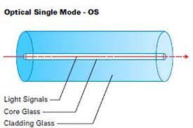

Tugas Fiber Optic
Nama: I Putu Eka Sukma Yoga
Kelas: XI TJKT 1
No: 03
Nama: I Putu Eka Sukma Yoga
Kelas: XI TJKT 1
No: 03
Pada dasarnya fungsi dari kabel Fiber Optik sama seperti jenis kabel yang lain yakni menghubungkan antar komputer atau pengguna satu sama lain dan dalam lingkup jaringan tertentu. Yang menjadi pembeda adalah kecepatan akses yang tinggi serta kemampuan transfer data lebih cepat. Untuk kecepatan pengiriman data bisa sampai kisaran Gigabit per detiknya. Selain itu karena tidak membawa listrik kabel jenis ini juga tida terpengaruhi gangguan elektromagnetik sehingga stabil dalam penggunaannya.
1.Bagian Inti (Core)
Bagian inti fiber optik terbuat dari bahan kaca dengan diameter yang sangat kecil (diamaternya sekitar 2 μm sampai 50 μm).
Diameter serat optik yang lebih besar akan membuat performa yang lebih baik dan stabil.
2.Bagian Cladding Bagian cladding adalah bagian pelindung yang langsung memakai serat optik. Biasanya ukuran cladding ini berdiameter 5 µm sampai 250 µm. Cladding terbuat dari bahan silikon, dan komposisi bahannya berbeda dengan bagian core. Selain melindungi core, cladding juga berfungsi sebagai pemandu gelombang cahaya yang memantulkan semua cahaya tembus kembali ke core.
3.Bagian Coating / Penyangga
Bagian coating adalah mantel dari serat optik yang berbeda dari cladding dan core.
Lapisan coating ini terbuat dari bahan plastik yang elastis. Coating berfungsi sebagai lapisan pelindung dari segala gangguan fisik yang mungkin terjadi,
misalnya lengkungan pada kabel,
kelembaban udara dalam kabel.
4.Bagian Strength Member & Outer Jacket Lapisan ini merupakan bagian yang sangat penting karena menjadi pelindung utama dari sebuah kabel fiber optik. Lapisan kekuatan anggota dan jaket luar adalah bagian terluar dari fiber optik yang melindungi inti kabel dari berbagai gangguan fisik secara langsung.
Fiber Optik Mode Tunggal (single mode) Pada fiber optik ini prosesnya hanya melalui satu buah transmisi. Cahaya hanya dapat melalui satu inti pada satu waktu. Inti dari fiber optik mode tunggal memiliki ukuran yang kecil yaitu hanya 9 mikrometer. Inti ini digunakan untuk mengirimkan gelombang cahaya inframerah dengan panjang gelombang 1.300-1550 nanometer.
Fiber Optik Mode Banyak (multi mode) Berbeda dengan mode tunggal, fiber optik jenis ini mampu mentransmisikan cahaya dalam jumlah banyak secara bersamaan. Fiber jenis ini mempunyai diameter yang cukup besar, yaitu 625 mikrometer. Kabel ini biasa digunakan untuk tujuan komersial. Inti fiber optik ini digunakan untuk mengirimkan gelombang cahaya inframerah dengan panjang gelombang 850-1300 nanometer.
© 2023 BY Eka Sukma